HOT '' // NACIS
✍ a short introduction
by Yohan boniface / @infomagicien,
Will Skora @skorasaurus, @wwwolford, @jaakkoh and sev menard.
OSM: OpenStreetMap The wikipedia of google maps - anyone can contribute and utilize as they wish (w/ attribution)
HOT image ?
geodata non-existant or $ .
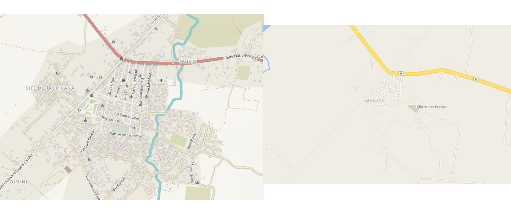
In crises, map data changed or needs to be mapped
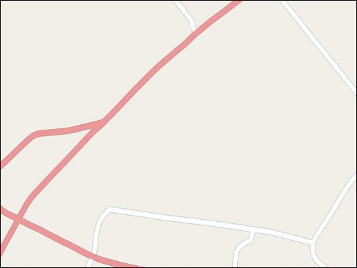
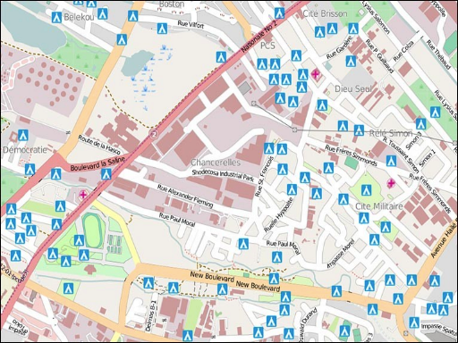
Making maps was hard
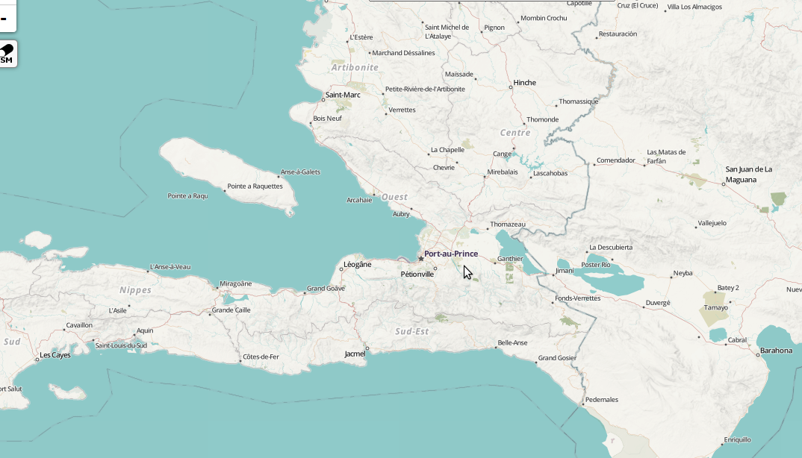
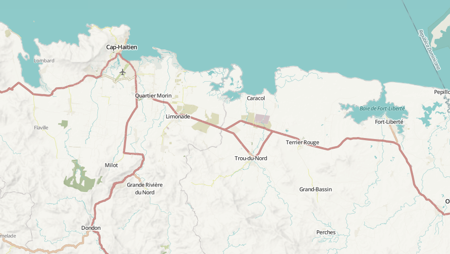
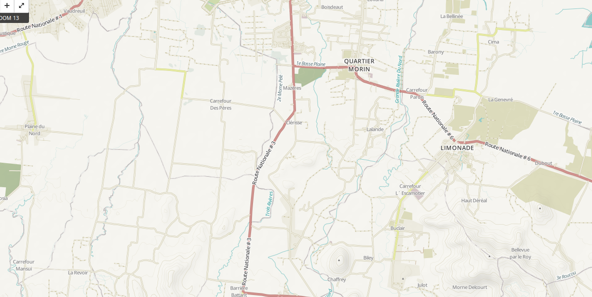
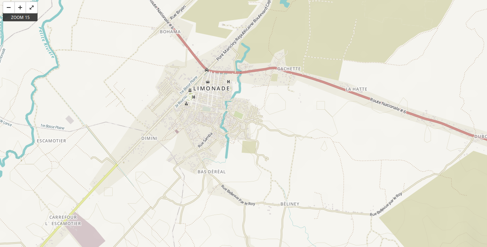
Initial POIs
hospitals, Govt buildings, schools
Map what is relevant
EX image of a few of the water icons;
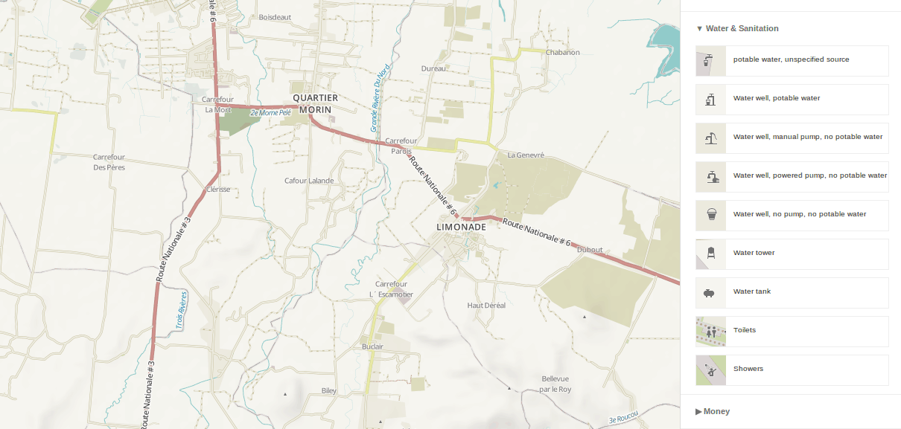
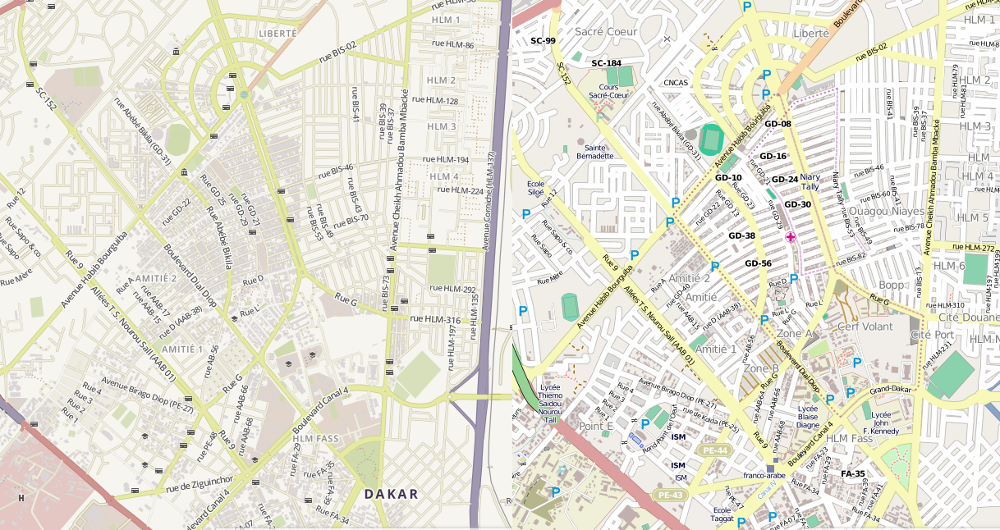
Icons from Noun Project | Maki | Custom (CC0)
pretty colors: light and pastel
designed w/ love in tilemill and carto
Styling highways by :
surface
classification
condition (smoothness)
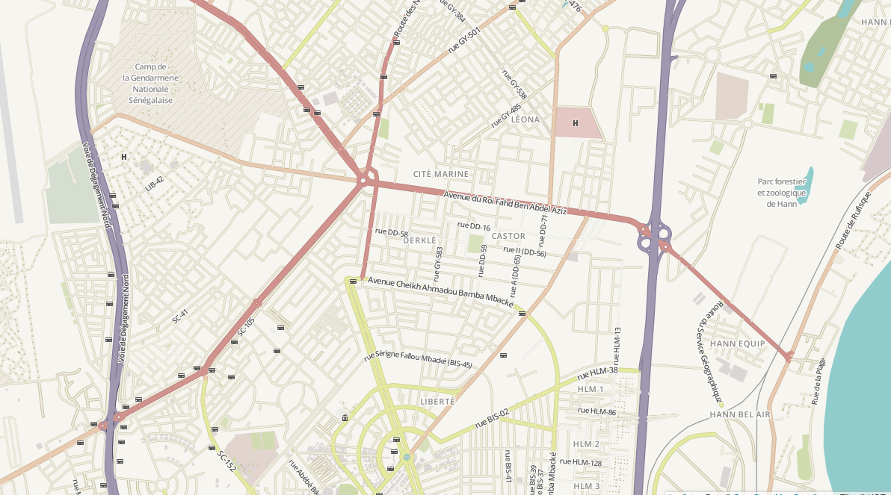
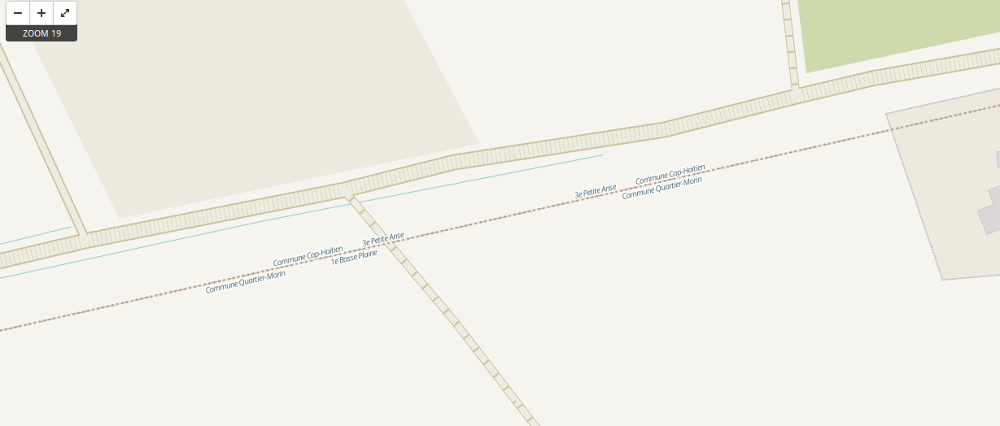
Coded in Carto, can be shared and adapted
in print or digitally.
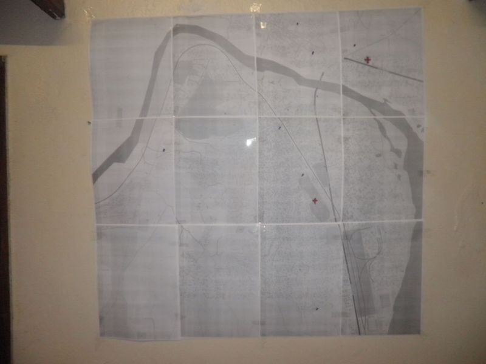
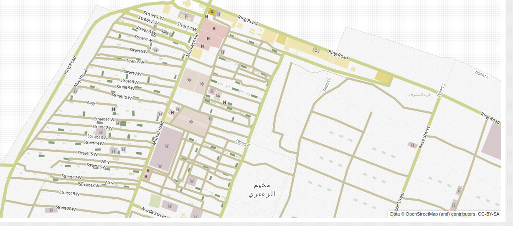
Been getting easier...
osm2pgsql * postgis db * tilemill you need command line fu
future: additional icons + classification (intermittent waterways, refugee camps)
Vectors ? WMS layer ? * Profit ?
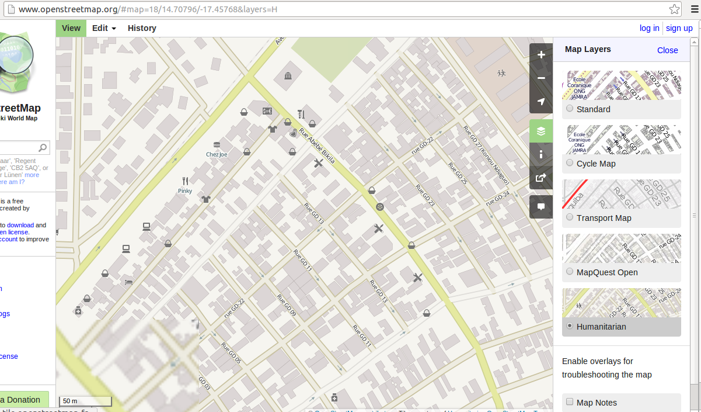
demo at: http://